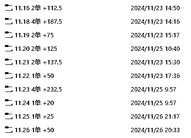
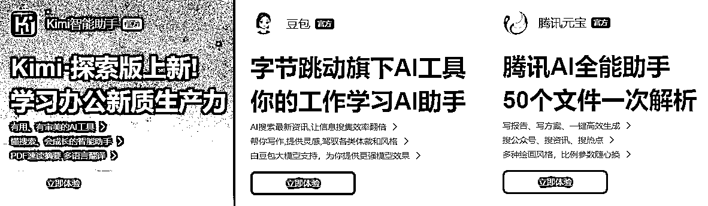
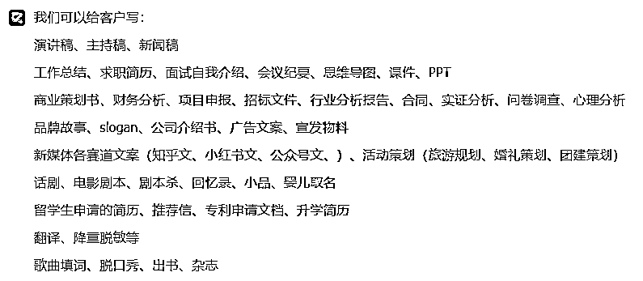
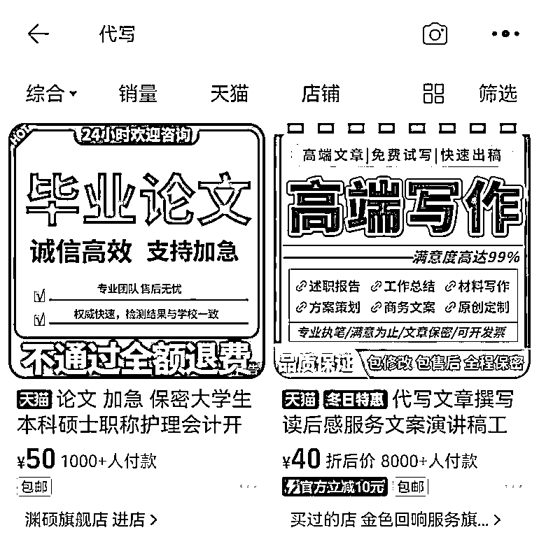
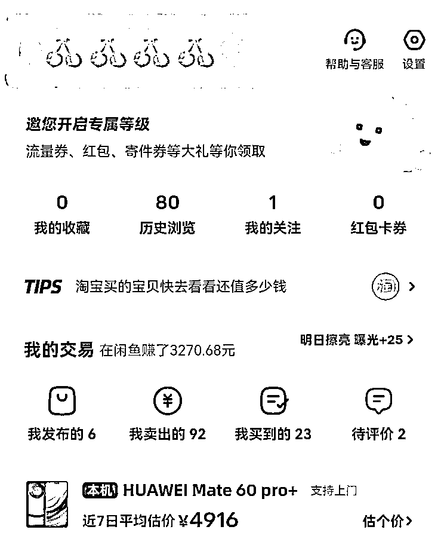
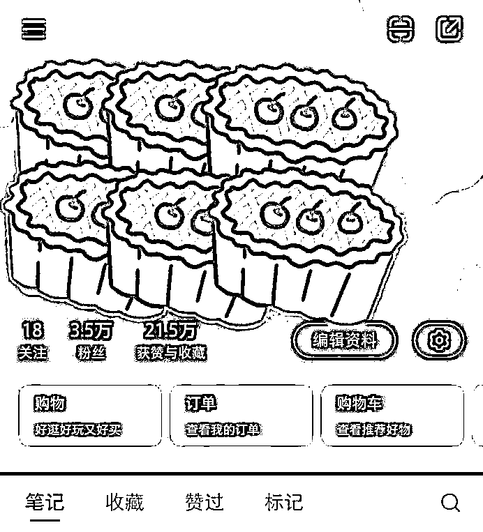
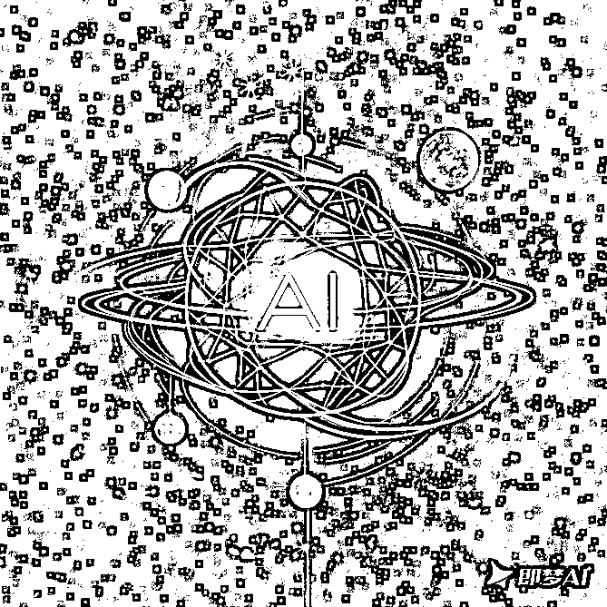

来源：https://uibsm1uo6r.feishu.cn/docx/TvpydmW9ToDIY0xQnwVcD7Wmncg

首先我贴个图，这是我自己0基础的小白做AI代写的收入！
很多人压根不知道如何开启自己的AI代写！下面我就来告诉你全流程！
要做AI代写你就要先学习AI工具的使用，例如kimi，豆包，元宝等等！
这些你都是不需要用科学上网就可以找到国产AI写作工具，对比起来chatGPT和cluade来说，更方便，而且更符合咱们自己的使用习惯！

根据后续使用的需求，灵活的选择适合自己的AI写作工具就可以了
自己先体验一下例如：演讲稿、读后感、简历、新媒体文章、PPT等等
这就很重要了，关系到你做AI代写的上限有多高，以及能挣多少！
当然普通人如果不知道的话也没事，可以看看以下这些赛道，都是大家可以去尝试做做看的，找到一个自己擅长的行业和赛道进行AI代写，才能事半功倍，让挣钱更有效率！

当然像PPT、演讲稿、作业、读后感、思维导图等等，也都是有不错的市场和收入的
个人建议：别去太简单没门槛的赛道，因为很卷，单价就会特别特别低！
这决定了咱们的收入来源和多少，有不少渠道可以选择！
最常用的主要是淘宝、闲鱼、小红书，当然你说抖音、b站、快手、视频号等等平台可以么？那肯定是没问题的呀，只要你能掌握流量，哪个平台都可以接单变现的！

操作如下：直接搜索代写，然后就是点击出来的随便一家店铺，进去找客服说应聘，基本上你给他下一单，他就会拉你进群，而且这个费用，他是会退给你的！
（PS：淘宝的优势在于，你不需要自己去做流量，只需要去他们淘宝店接单就可以了，当然后续接单是在企业微信的，基本上是在20%-25%左右的利润，就比如淘宝接了个PPT是300价格的，到你手里就差不多60-75左右的收入，其他的就是淘宝店铺的，属于小黑奴的感觉）

操作如下：直接卖闲置，然后发布闲置，根据同行的文案去模仿一条+图文，定好价格就可以发布了，然后等自然曝光起来，就可以接单了！
（PS：闲鱼的优势在于，你不用和别人分钱，自己就可以搞定全部流程，但是你也需要自己去谈单，谈价格，然后发货，确认收货，就是事情比较多，但是挣的也相对较多，只不过目前闲鱼改版之后没之前那么好做了，而且来闲鱼的人大多是容易斤斤计较的会有点累）

操作如下：直接发布代写相关的内容，或者是聊天记录，或者是转账记录，总之就是突出你写作很厉害的感觉，这样别人刷到如果有需求就会找你接单！
（PS：小红书的优势在于，当你把流量做起来的时候，你不仅不用和别人分钱，还可以招人来给你干，你给他分钱，让他帮你写，你只需要做流量接单就可以了，这样可以慢慢做大变成一个工作室，相比淘宝要付费推广，小红书则需要你有一定的内容运营能力）
基本上当你走完前3步，你就知道AI代写究竟是怎么一回事了！
接下来要考虑的就是一直做小而美的事情，还是说放大了之后去做小团队、工作室、甚至开公司，这就是这一步需要考虑的事情，当然我还在前3步，真正接触AI写作也就不超过半个月的新人和小白，所以以下只是我自己的想法而已！
提升技能，找到更好更贵更有门槛的行业和赛道，然后去用AI代写，这样的话，一个月的收入也有个大几千，当然如果用心又努力的话，一个月破万也是可以做到的！
闲鱼或者小红书，如果可以淘宝也能做起来，找到那些需要代写的人群，并且给他们更好的服务，然后拥有自己的写手团队和流量团队，把这件事情滚大，在自己的专业领域越做越好！

AI行业从出现到现在，不过才过去短短的1-2年时间，就已经出现了无数的机会和项目了，不管你最后到底是否从事AI写作，我都真心希望你可以多了解AI如何使用，这样不仅可以让你更具有核心竞争力，而且还有机会能自己不依靠上班就有收入来源！
如果想了解更多Ai项目，直接关注我的公众号【小梦Ai玩家】~
公众号回复“3”即可，找到本人微信，链接本人探索更多可能性！